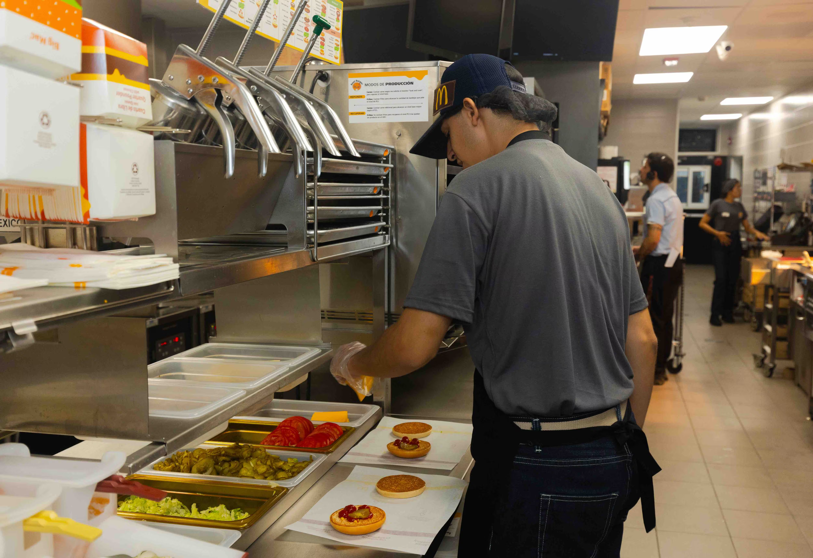

Especialistas en el sector gastronómico y cadenas de comida rápida.
Impulsar el crecimiento de empresas gastronómicas mediante el desarrollo de líderes, la capacitación de equipos y la optimización de procesos, generando mejoras sostenibles en el rendimiento, la eficiencia y la calidad del servicio

Ayudar a las empresas a alcanzar la cumbre de su eficiencia, competitividad y éxito sostenible a largo plazo
APEX GESTIÓN | Consultoría Estratégica Gastronómica Como consultora dedicada a la profesionalización de empresas de comida rápida, nuestro propósito es modernizar las estructuras de trabajo para convertirlas en organizaciones ágiles y eficientes . Utilizamos herramientas de análisis estratégico para asegurar que cada equipo esté alineado con los objetivos de crecimiento y rentabilidad, permitiendo que el negocio se adapte con éxito a los cambios del mercado actual
Nuestra metodología se apoya en el uso de tecnologías de la información (TICs) para mejorar la gestión diaria y facilitar la toma de decisiones acertadas . No solo buscamos que nuestros clientes compitan por precio, sino que logren una ventaja real a través de la innovación constante, la calidad operativa y la excelencia en el servicio al cliente . Trabajamos para que el conocimiento de los colaboradores se convierta en un motor de crecimiento, reduciendo la rotación de personal y fortaleciendo el liderazgo en todos los niveles de la organización . En APEX, no solo analizamos negocios; diseñamos el camino para que las empresas gastronómicas lideren el futuro del sector en Latinoamérica